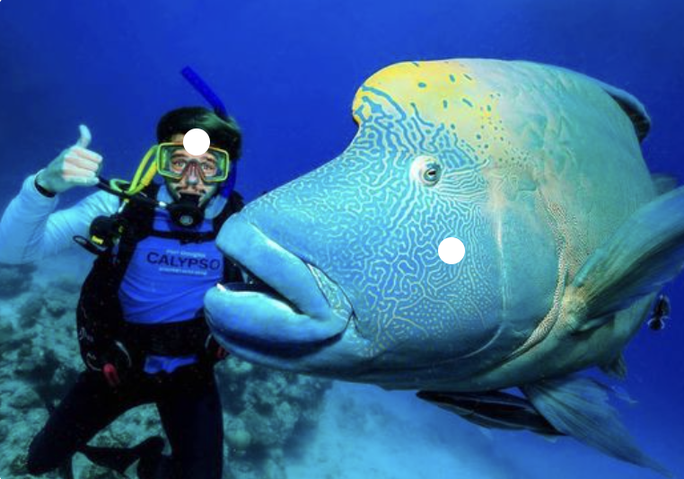
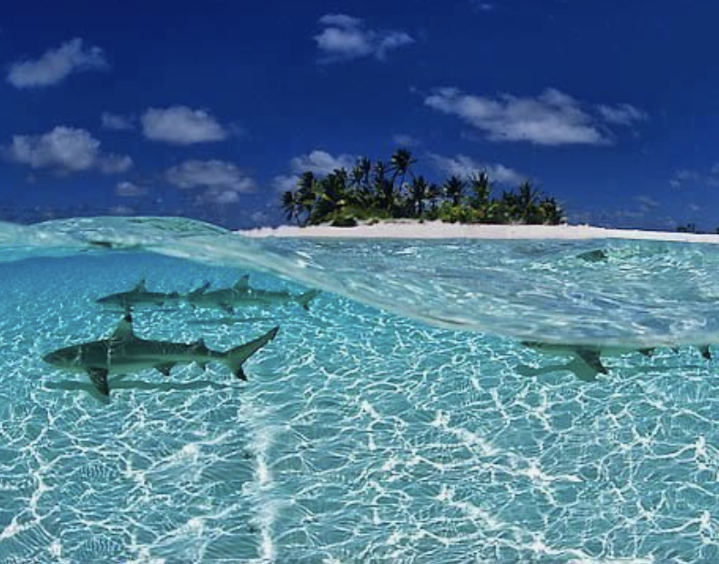
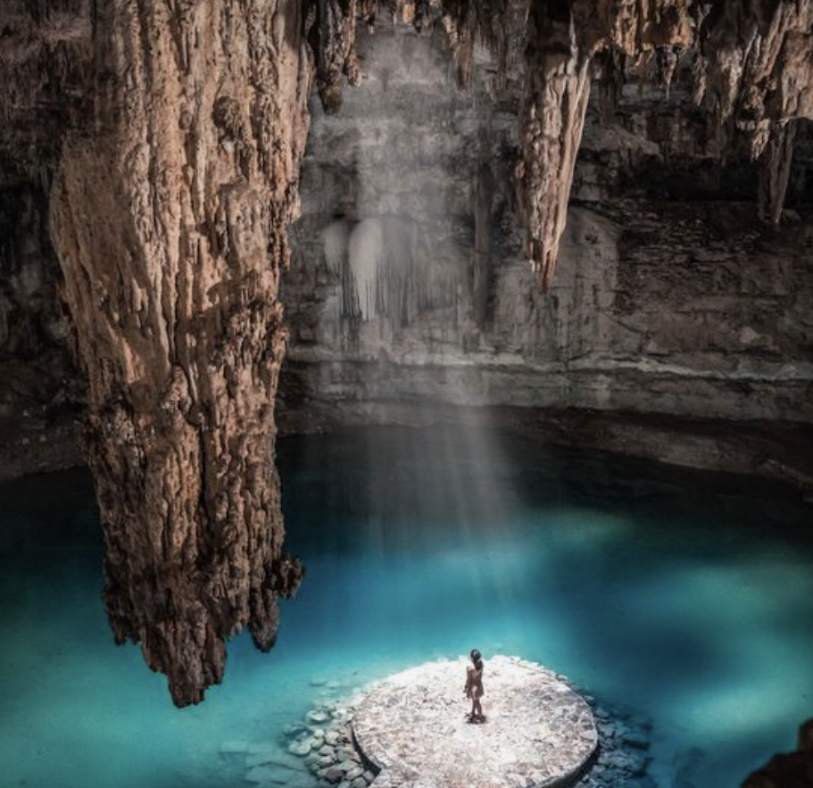

At Deep Blue Quest, we're not just about diving—we're about creating unforgettable experiences that inspire a lifelong love for the ocean. With our team of passionate instructors and guides, we offer personalized attention, safety-focused training, and expert knowledge of the world's most stunning dive sites. Whether you're seeking thrilling underwater adventures or tranquil reef explorations, we tailor each dive experience to ensure you discover the wonders of the sea in a way that suits you best. Dive with us and embark on a journey of discovery, excitement, and conservation.
 Immerse yourself in the wonders of the world's largest coral reef system. Highlights: Encounter giant cod at Cod Hole, drift through Ribbon Reefs. Activities: Spot reef sharks at Osprey Reef and explore the historic Yongala Shipwreck. Experience: Dive into unforgettable adventures in this iconic diving destination.
 Dive into crystal-clear waters teeming with colorful marine life. Highlights: Encounter eagle rays at Fish Head, marvel at manta rays at Manta Point. Activities: Explore Maaya Thila's coral gardens and vibrant underwater ecosystems. Experience: Dive in for diverse experiences in one of the world's top dive destinations.
 Explore Raja Ampat's vibrant coral reefs and marine biodiversity. Highlights: Dive at Cape Kri for record-breaking marine life encounters. Activities: Discover vibrant coral gardens at The Passage and hidden caves in Misool. Experience: Encounter rare marine species and dive into extraordinary adventures.